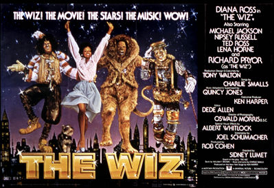

| Month | Day | Year | |
|---|---|---|---|
| Day 1 | July | 28 | 2018 |
| Day 2 | July | 30 | 2018 |
| Day 3 | July | 31 | 2018 |
It's "Therapetic"
Introduction
My name is Tracy Thomas.
- Native daughter of Birmingham
- Fan of jazz, classic r&b, and all things comedy, for example: Rickey Smiley - Bad Doughnuts Prank Call
- All-around kooky-putz
Current Goings-On
I am a graphic designer, specializing in print.
- Print designer and brander for nearly thirty years
- Portfolio of pieces for both for-profit and non-profit organizations
- In-House and Freelance Experience

Career Strategy
I am trying to make a career transition to web design/development and software/mobile development.
- I've wanted to learn HTML, CSS, and Javascript for a long time
- Until very recently, the opportunity hasn't been there, timewise/money-wise
- But now, I'm prepared to take the leap into online design/development
Career Tactics
Ideally, merging the design and branding skills with coding.
- The career-change options seem limitless
- I figure I can begin with enhancing the web development skills at first
- Then add software/full-stack development as I go

Gratitude for the Program
I'm looking forward to working with my classmates and the educators at Covalence.
- I was so glad to discover, earlier this year, that Covalence offers an immersive course that exposes students to full-stack development
- I'm confident the course will help me decipher my next-steps as I proceed with the career transition
- Also, the City of Birmingham seems to be getting even more on-board with tech trends as it preps for a brighter future
Thanks!
Thanks for the prework--it was a good set of exercises in preparing for the class!
- The instructors are terrific
- I really appreciate each of them preparing us for issues in coding, the command line, and VS Code that we will likely run into with older generations of files
- Excited about beginning the August 20th Cohort
© 2018 Tracy Thomas
- How coding will make a new world of possibilities available to us
- How all of the front and back end technology combines in a development skills set
- Full stack technology
- Javascript and its frameworks
- HTML and CSS
Five things I'm excited to learn about with Covalence:
- When I was roughly 10/11 years old, I developed an interest in the programming languages, BASIC and COBOL.
- I wanted to create a video game like Space Invaders or Frogger, but I couldn't grasp the language syntax.
- I remember a time when there were no computers in homes, only commercial offices.
- Smartphone technology was not available for many years. In my formative years, we used an avocado green rotary dial phone.
- The technological advances made are overwhelming--in a good way--when I think about it.
Interesting Things About Me
Here is one of my all-time favorite movies, The Wiz.
I remember my Mom, my sister and I going to see it at the Alabama Theatre when I was nine years old.
Such fun!
 The Wiz is a 1978 American musical adventure fantasy film produced by Universal Pictures and Motown Productions, and released by Universal Pictures on October 24, 1978. An urban reimagining of L. Frank Baum's classic 1900 children's novel, The Wonderful Wizard of Oz, featuring an entirely African-American cast, the film was loosely adapted from the 1974 Broadway musical of the same name. It follows the adventures of Dorothy, a shy twenty-four-year-old Harlem schoolteacher who finds herself magically transported to the urban fantasy Land of Oz, which resembles an alternative fantasy version of New York City. Befriended by a Scarecrow, a Tin Man and a Cowardly Lion, she travels through the city to seek an audience with the mysterious Wiz, who they say is the only one powerful enough to send her home.
Cast
- Diana Ross - Dorothy
- Michael Jackson - The Scarecrow
- Nipsey Russell - The Tin Man
- Ted Ross - The Lion
- Richard Pryor - The Wiz
- Lena Horne - Glenda the Good Witch of the North
Unfortunately, the movie was an unsuccessful commercial effort. However, it is a cult classic among several constituent audiences:
Stats
Release Date - October 24, 1978
Budget - $24 million
Box Office Revenues - $13.6 million